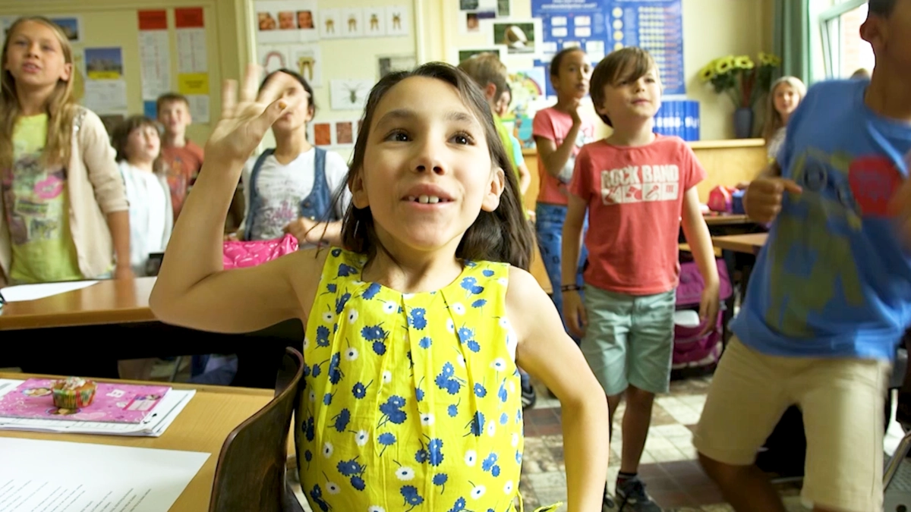

#sayyes
#sayyes is een krachtige video die kijkers toont dat kinderen met een beperking rechten hebben: het recht om in een warm gezin op te groeien, recht om naar school te gaan in de eigen buurt, recht op vrije keuze van het vrijetijdsaanbod,…
IMPACT
De video is uitgebracht in 2015 en we krijgen ook nu nog regelmatig berichten van leerkrachten die de video gebruiken in hun klas. Deze video visualiseert, op creatieve wijze, een paar rechten in het VN verdrag inzake de Rechten van Personen met een Handicap. Die laagdrempeligheid in combinatie met storytelling die je beroert zorgt ervoor dat de video zowel bij lancering op korte termijn als vandaag nog steeds IMPACT genereert.
